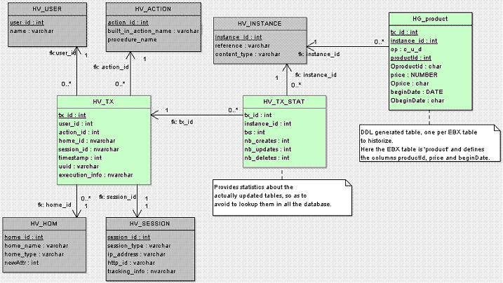

History is a feature allowing to track all data modifications on a table (records creation, update and deletion).
It is an improvement over the deprecated XML audit trail.
In order to activate historization for a table, a history profile has to be set for the table in the data model. This section describes history profiles and the way they are associated with tables.
A history profile specifies when the historization is to be created. In order to edit history profiles, select Administration > History and logs.
A history profile is identified by a name and defines the following information:
An internationalized label.
A list of dataspaces (branches) for which history is activated. It is possible to specify whether direct children and/or all descendants should also be concerned.
Some profiles are already created when installing the repository. These profiles can neither be deleted nor modified.
Profile Id | Description |
|---|---|
| This profile is activated only on the reference dataspace. |
| This profile is activated on all dataspaces. |
| This profile historizes dataset headers. However, this profile will only be setup in a future version, given that the internal data model only defines dataset nodes. |
History can be activated on a table either through the data model assistant, or by editing the underlying data model.
To activate history by editing the data model, a history profile should be declared on the table using the historyProfile element.
<osd:table> <primaryKeys>/key</primaryKeys> <historyProfile>historyProfileForProducts</historyProfile> </osd:table>
The data model assistant allows you to view the historization profiles defined in the repository.
Historization must be activated for each table separately. See model design documentation for more details.
For a historized table, the default behavior is to historize all its supported elements (see Impacts and limitations of historized mode).
It is possible to disable history for a given field or group, either through the data model assistant, or by editing the underlying data model.
To disable the history of a field or group by editing the data model, use the element osd:history with the attribute disable="true".
<xs:element name="longDescription" type="xs:string">
<xs:annotation>
<xs:appinfo>
<osd:history disable="true" />
</xs:appinfo>
</xs:annotation>
</xs:element>
To disable the history of a field or group through the data model assistant, use the History property in the Advanced properties of the element.
When this property is defined on a group, history is disabled recursively for all its descendants. Once a group disables history, it is not possible to specifically re-enable history on a descendant.
If the table containing the field or group is not historized, this property will not have any effect.
It is not possible to disable history for primary key fields.
If problems are detected at data model compilation, warning messages or error messages will be added to the validation report associated with this data model. Furthermore, if any error is detected, each associated instance (dataset) will be inaccessible. The most common error cases are the following:
A table references a profile that is not defined in the repository.
A history profile that is referenced in the data model mentions a non-defined or closed dataspace in the current repository.
Deploying a data model on a repository that does not have the expected profiles requires the administrator to add them.
When the history has been activated on a table in the data model, it is possible to access the history view from various locations in the user interface: record, selection of records, table and dataset.
The next section explains how permissions are resolved.
For more information, see table history view section. To access the table history view from Java, the method AdaptationTable.getHistory must be invoked.
Data permissions are also applied to data history. History permissions are resolved automatically as the most restricted permission between data permissions and read-only access right.
This is true for user-defined permission rules and also for programmatic permission rules.
When defining a programmatic rule, it may be required to distinguish between the functional dataset context and the history view context, either because the expected permissions are not the same, or because some fields are not present in the history structure. This is the case for dataset fields, computed values and fields for which history has been disabled. The methods Adaptation.isHistory and AdaptationTable.getHistory can then be used in the programmatic rule in order to implement specific behavior for history.
There is currently a limitation when a table has a scripted permission rule on record specified: for security reason access to the table history is totally disabled for everyone but the built-in administrator profile. Access for other users will be allowed in a future version.
The transaction history view gives access to the executed transactions, independently of a table, a dataset or a data model, directly from the user interface.
To see the 'Transaction history' table, navigate to the Administration area and select 'History and logs' using the down arrow menu in the navigation pane. Transaction history can also be accessed from the Dataspaces area by selecting a historized dataspace and using the Actions menu in the workspace.
For more information, see transaction history view.
This section describes how to directly access the history data by means of SQL.
The database tables must be accessed only in read-only mode. It is up to the database administrator to forbid write access except for the database user used by TIBCO EBX®, as specified in the section Rules for the database access and user privileges.
Here is a description of the history tables in the database.
The database schema contains (see also the diagram in the next section):
Common and generic tables | The main table is These common tables are all prefixed by "HV". |
Specific generated tables | For each historized table, a specific history table is generated. This table contains the history of the data modifications on the table. In the EBX® user interface, the name of this table in database can be obtained by clicking on the table documentation pane (advanced mode). All the specific history tables are prefixed with "HG". |
In the following example, we are historizing a table called product. Let us assume this table declares three fields in EBX® data model:
Product
productId: int
price: int
beginDate: Date
The diagram below shows the resulting relational schema:

Activating history on this table generates the HG_product table shown in the history schema structure above. Here is the description of its different fields:
tx_id: transaction ID.
instance: instance ID.
op: operation type - C (create), U (update) or D (delete).
productId: productId field value.
OproductId: operation field for productId, see next section.
price: price field value.
Oprice: operation field for price, see next section.
beginDate: date field value.
ObeginDate: operation field for beginDate, see next section.
For each functional field, an additional operation field is defined, composed by the field name prefixed by the character O. This field specifies whether the functional field has been modified. It is set to one of the following values:
null: if the functional field value has not been modified (and its value is not INHERIT).
M: if the functional field value has been modified (not to INHERIT).
D: if record has been deleted.
If inheritance is enabled, the operation field can have three additional values:
T: if the functional field value has not been modified and its value is INHERIT.
I: if the functional field value has been set to INHERIT.
O: if the record has been set to OCCULTING mode.
The history feature has some impacts and known limitations, which are listed in this section. If using historized mode, it is strongly recommended to read these limitations carefully and to contact TIBCO Software Inc. support in case of questions.
Some EBX® data model constraints become blocking constraints when table history is activated. For more information, see the section Structural constraints.
Some restrictions apply to data models containing historized tables:
Limitations exist for two types of aggregated lists: aggregated lists under another aggregated list, and aggregated lists under a terminal group. Data models that contain such aggregated lists can be used, however these lists will be ignored (not historized).
Computed values are ignored.
User-defined attributes on historized tables result in data model compilation errors.
Data model evolutions may also be constrained by the underlying RDBMS, depending on the data already contained in the concerned tables.
No data copy is performed when a table with existing data is activated for history.
Global operations on datasets are not historized (create an instance and remove an instance), even if they declare a historized table.
Default labels referencing a non-historized field are not supported for historized tables.
As a consequence, default labels referencing a computed field are not supported for historized tables.
The workaround is to implement the UILabelRenderer interface and adapt the label computation for history.
D3: the history can be enabled in the delivery dataspace of a primary node, but in the delivery dataspace of the replica nodes, the historization features are always disabled.
Recorded user in history: for some specific operations, the user who performs the last operation and the one recorded in the corresponding history record may be different.
This is due to the fact that these operations are actually a report of the data status at a previous state:
Archive import: when importing an archive on a dataspace, the time and user of the last operation performed in the child dataspace are preserved, while the user recorded in history is the user who performs the import.
Programmatic merge: when performing a programmatic merge on a dataspace, the time and user of the last operation performed in the child dataspace are preserved, while the user recorded in history is the user who performs the merge.
D3: for distributed data delivery feature, when a broadcast is performed, the data from the primary node is reported on the replica node and the time and user of the last operation performed in the child dataspace are preserved, while the user recorded in history is 'ebx-systemUser' who performs the report on the replica node upon the broadcast.